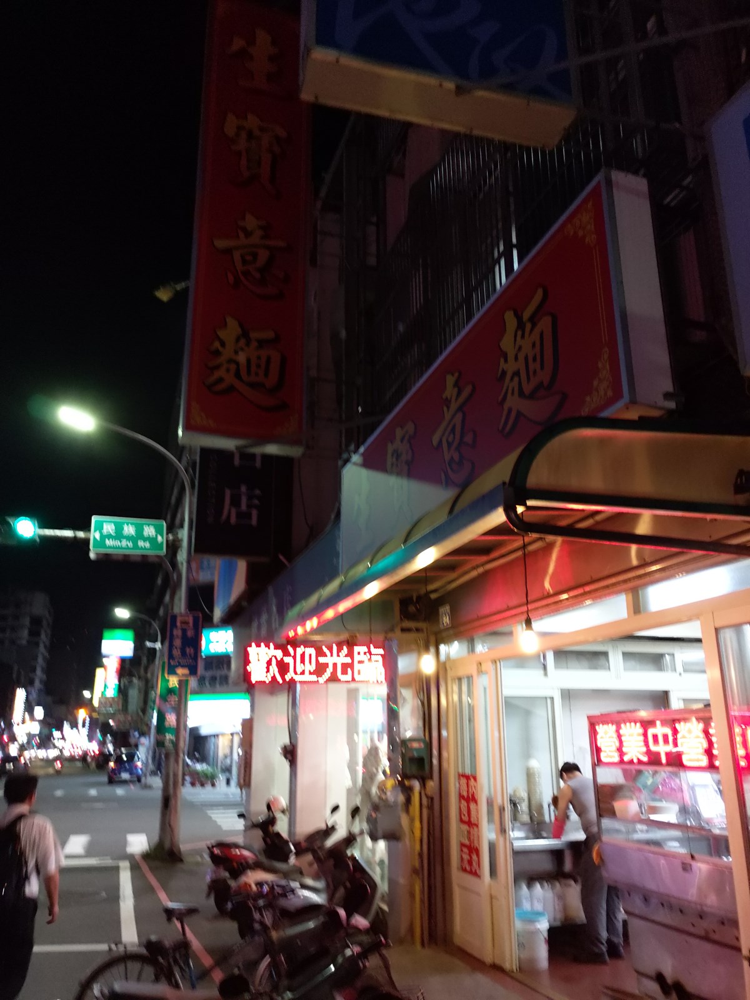
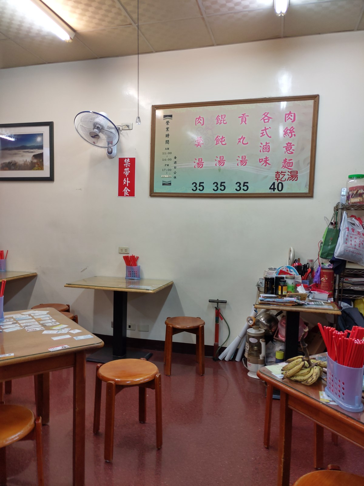
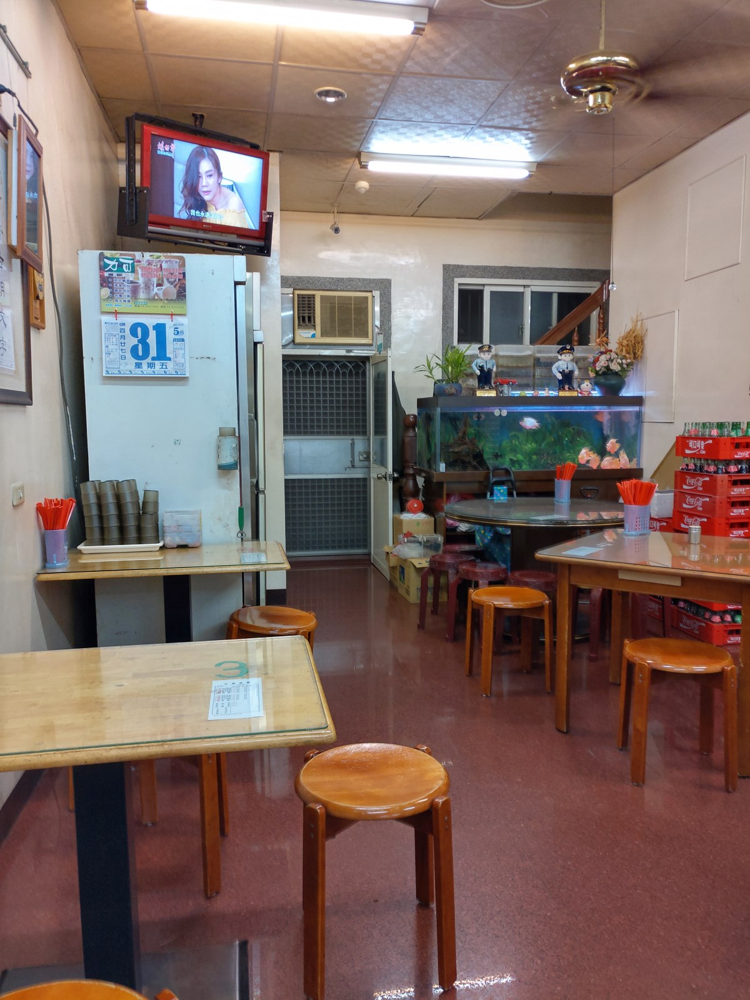
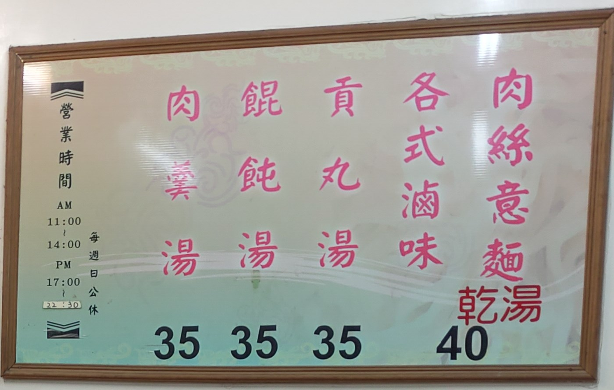
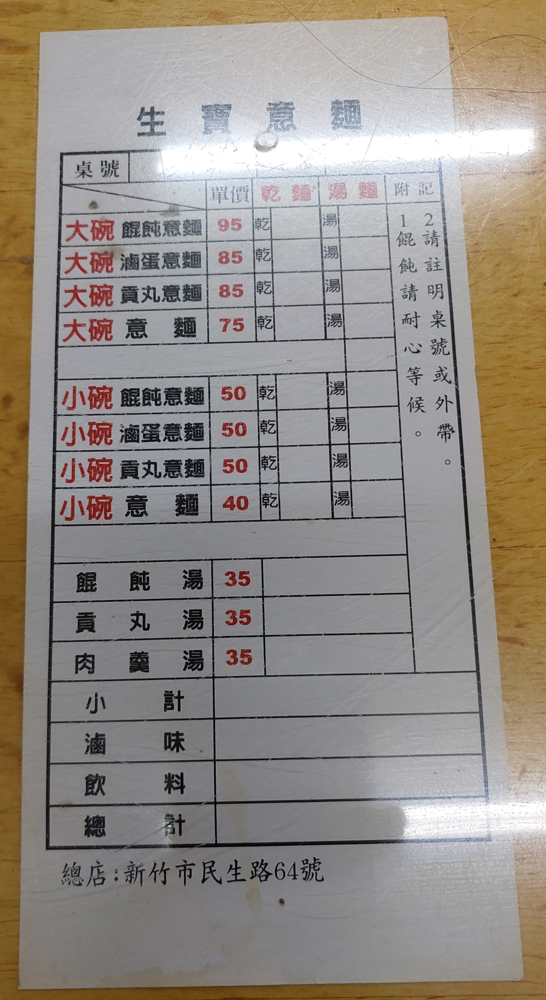
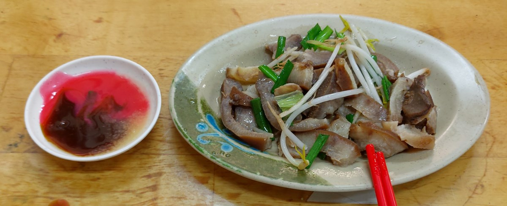
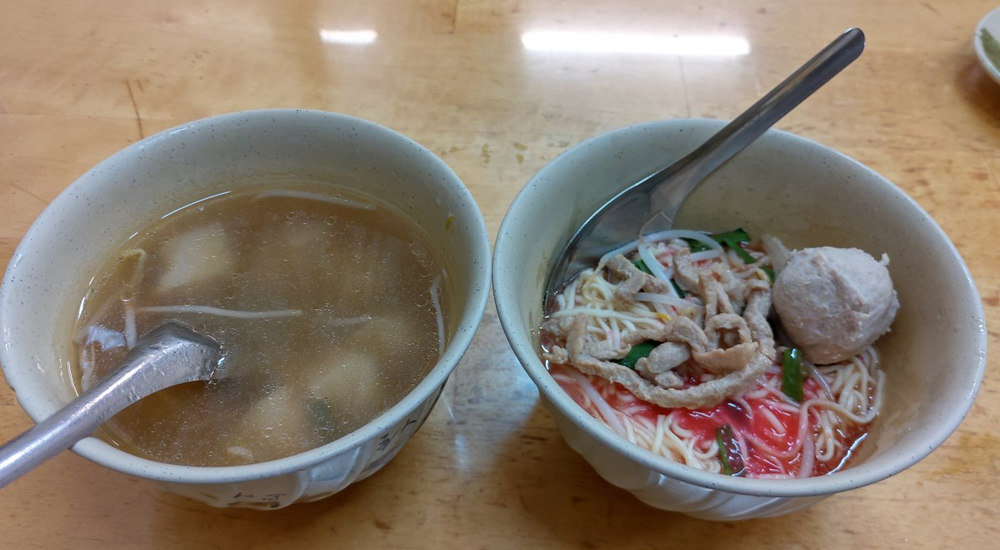

[新竹] 生寶意麵
| 餐廳名稱: | 生寶意麵 |
|---|---|
| 地 址: | 新竹市東區民生路64號 |
| 營業時間: | 11:00~14:00 17:00~22:30 |
| 週日公休 |
傳統口味的意麵，大約晚上10:00 經過，聽說是老店很久了， 今天就來踩雷一下。
本來還在想，是不是打烊了，走到門口，看見霓虹燈顯示營業中，就放心了。 
室內裝潢就是一般小吃店的裝潢。  
特別把牆上的菜單放大。 
桌上的菜單。 
小菜最先上，它的小菜蠻多樣的，今天先點個豬頭皮就好， 味道ok。 倒是那個 紅醬，黑醬，蒜泥，好像很多古早麵 都是用這些醬調的。連乾麵也是一樣的醬，一樣的豆芽菜。 
點了 小碗的 乾貢丸意麵，加上 餛飩湯。乾麵的調味，青菜 跟 小菜 一模一樣，味道當然也一樣，只差附在小菜或附在麵條上。 乾麵的部分，其實我覺得 竹北 戶政事務所，大郵局 附近的 郭家麵攤 調味更好，也同樣開很久了。 餛飩湯 意外的好喝，餛飩本身包的也不錯。 
生寶意麵 就是很正常的小吃店，順道經過可以來吃。在中華路與民生路交叉口 有一個私人停車場，停車方便，只是大概很少有人停貴貴的停車場，去吃便宜的 小吃店吧。